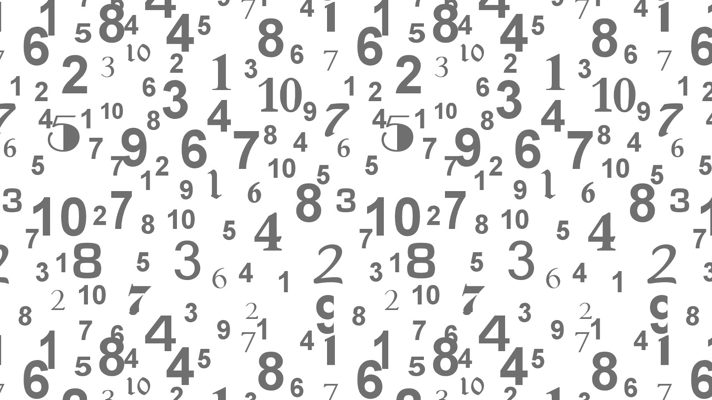
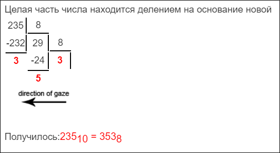
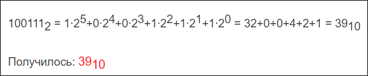
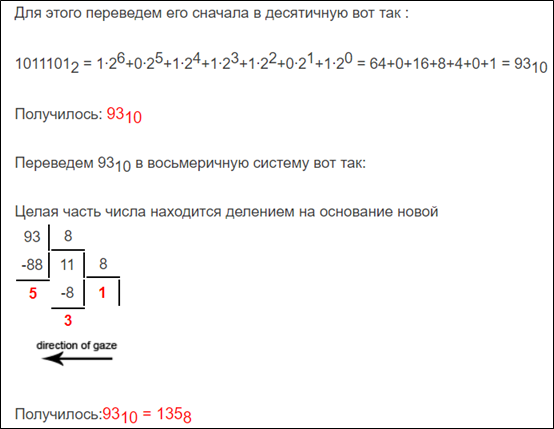
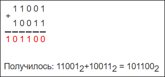
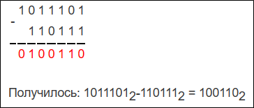

Натуральные (целые положительные) числа. Числа 1 , 2 , 3 , … называют натуральными или целыми положительными числами. Множество натуральных чисел бесконечно. Множество натуральных чисел обозначают символом N. Число нуль, отрицательные и дробные числа не являются натуральными числами.
Целые отрицательные числа. Числа – 1 , – 2 , – 3 , … называют целыми отрицательными числами. Множество целых отрицательных чисел бесконечно.
Целые числа. Множество целых чисел состоит из множества натуральных чисел, числа «нуль» и множества целых отрицательных чисел. Множество целых чисел бесконечно. Множество целых чисел обозначают символом Z.
Система счисления (англ. numeral system или system of numeration)
Система счисления — это символический метод записи чисел, представление чисел с помощью письменных знаков или способ записи чисел с помощью заданного набора специальных знаков (цифр). Система счисления дает каждому числу уникальное представление (или, по крайней мере, стандартное представление), отражает алгебраическую и арифметическую структуру чисел.
Существуют позиционные и непозиционные системы счисления.
В непозиционных системах вес цифры не зависит от ее позиции в записи числа. Например, в римской системе счисления вес цифры Х в числе ХХХII (тридцать два) равен десяти.
В позиционных системах вес каждой цифры изменяется в зависимости от ее положения (позиции) в последовательности цифр, изображающих число. Например, в числе 757,7 первая семерка означает 7 сотен, вторая — 7 единиц, а третья — 7 десятых долей единицы.
Любая позиционная система счисления характеризуется своим основанием. Основание позиционной системы счисления — это количество различных знаков или символов, используемых для изображения чисел в данной системе.
Следовательно, возможно бесчисленное множество позиционных систем: двоичная, троичная, четверичная и т. д.
Запись чисел в каждой из систем счисления с основанием q означает сокращенную запись выражения
an-1qn-1 + an-2qn-2 + ⋯ + a1q1 + a0q0 + a-1q-1 + ⋯ + amqm
где ai — цифры системы счисления; n и m — число целых и дробных разрядов соответственно.
Наиболее привычная для нас система счисления — десятичная
Эта система описывается с помощью десяти цифр, и ее основание равно десяти:
| Цифра | Обозначение |
|---|---|
| 0 | ноль |
| 1 | один |
| 2 | два |
| 3 | три |
| 4 | четыре |
| 5 | пять |
| 6 | шесть |
| 7 | семь |
| 8 | восемь |
| 9 | девять |
Для записи чисел в позиционной системе с основанием n нужно иметь алфавит из n цифр.
Обычно для этого при n < 10 используют n первых арабских цифр: 0, 1, 2, 3, 4, 5, 6, 7, 8, 9 (цифры пришли из Индии, а европейские народы познакомились с ними благодаря арабам).
Введение в арифметику
Арифметикой называют науку, изучающую простейшие свойства чисел и арифметических действий. Существуют 4 основных арифметических действия: сложение, вычитание, умножение, деление.
Сложение
Единицы, из которых составлено несколько чисел, могут быть объединены в одну группу. Число, которое получится после счета всех единиц этой группы, называется суммой, а те числа, которые соединяются в одну группу, называются слагаемыми. Действие, состоящее в образовании суммы нескольких чисел, называется сложением этих чисел.
- Сумма не меняется от перестановки её слагаемых: a + b = b + a.
- Сумма не зависит от группировки её слагаемых: (a + b) + c = a + (b + c) = a + b + c.
- Чтобы умножить число на сумму, можно умножить это число на каждое слагаемое и результаты сложить a × (b + c) = a × b + a × c.
Вычитание
Действие, состоящее в том, что от одного числа отнимается столько единиц, сколько их содержится в другом данном числе, называется вычитанием. Число, из которого вычитают, называется уменьшаемым. Число, которое вычитают, — вычитаемым, результат вычитания — значением разности, а запись со знаком минус — разностью.
Умножение
Умножением называется сложение одинаковых слагаемых. При этом то число, которое повторяется как слагаемое, называется множимым (оно умножается), а число, показывающее, сколько берется таких одинаковых слагаемых, называется множителем. Число, полученное после умножения, называется произведением.
Деление
Действие, состоящее в отыскании одного из множителей по данному произведению и другому множителю, называется делением. При этом данное произведение, называется делимым, данный множитель – делителем, а искомый сомножитель – частным.
Позиционные системы счисления
Каждая система счисления имеет свои особенности и применяется в различных научных областях.
| Основание | Название | Алфавит системы счисления |
|---|---|---|
| n=2 | Двоичная | 0,1 |
| n=8 | Восьмеричная | 0,1,2,3,4,5,6,7 |
| n=10 | Десятичная | 0,1,2,3,4,5,6,7,8,9 |
| n=16 | Шестнадцатеричная | 0,1,2,3,4,5,6,7,8,9,A,B,C,D,E,F |
Например, двоичная система счисления широко используется в компьютерах для представления и обработки данных, а также при создании штрих-кодов.
При n > 10 к десяти арабским цифрам добавляют заглавные латинские буквы: A, B, C, D, E, F. При этом A = 10, B = 11, C = 12, D = 13, E = 14, F = 15. Cвои названия позиционные системы счисления получили в зависимости от основания. Если основание системы равно двум (n = 2), то система называется двоичной; если n = 3. В информатике широкое применение нашли двоичная, восьмеричная, десятичная и шестнадцатеричная системы счисления.
Задачи систем счисления
Опишем ниже правила перевода чисел из одной системы счисления в другую.
| Перевод чисел из одной позиционной системы в другую |
|---|
| Для перевода числа из одной позиционной системы в другую нужно разделить число на основание новой системы счисления, затем частное от деления также разделить на основание новой системы до тех пор, пока оно не станет меньше основания новой системы счисления. Выписав последнее частное и все остатки, начиная с последнего, получим представление этого числа в другой системе счисления. |
Рассмотрим пример №1. Переведите число 235 из десятичной системы счисления в восьмеричную:
Перевод чисел из любой позиционной системы счисления в десятичную систему счисления:
| Правила перевода |
|---|
| Для перевода числа из любой позиционной системы счисления в десятичную достаточно вспомнить формулу записи числа в позиционной системе счисления. |
Рассмотрим пример №2. Переведите число 100111 из двоичной системы счисления в десятичную:
Перевод чисел из двоичной системы счисления в восьмеричную и шестнадцатеричную системы:
| Перевод |
|---|
| Перевод чисел из двоичной системы в восьмеричную и шестнадцатеричную системы счисления можно выполнить следующим образом. Для реализации одного из них можно перевести двоичное число в десятичную систему счисления, а затем выполнить перевод десятичного числа в восьмеричную или шестнадцатеричную систему счисления. |
Рассмотрим пример №3. Переведите число 1011101 из двоичной в восьмеричную систему счисления:
Арифметика двоичных чисел
Двоичные числа, как и десятичные, можно складывать в столбик, начиная с младшего разряда. Для этого используют следующие правила (таблицу сложения):
| + | 0 | 1 |
|---|---|---|
| 0 | 0 | 1 |
| 1 | 1 | 10 |
Например, сложим в столбик 110012 + 100112
Вычитание выполняется почти также, как и в десятичной системе.
| A | B | A - B |
|---|---|---|
| 0 | 0 | 0 |
| 1 | 0 | 1 |
| 1 | 1 | 0 |
| 10 | 1 | 1 |
В последнем случае приходится брать заем из предыдущего разряда. Например, выполните вычитание в столбик 10111012- 1101112
Операция умножения двоичных чисел выполняется по обычной схеме, применяемой в десятичной системе счисления, с последовательным умножением множимого на очередную цифру множителя.
| × | 0 | 1 |
|---|---|---|
| 0 | 0 | 0 |
| 1 | 0 | 1 |